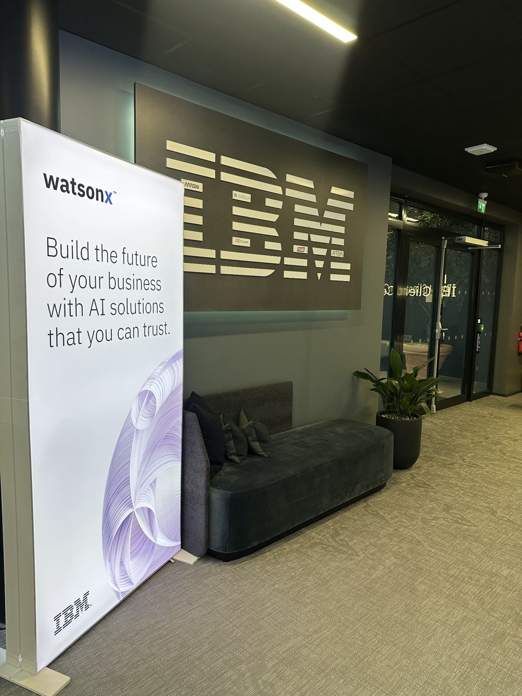
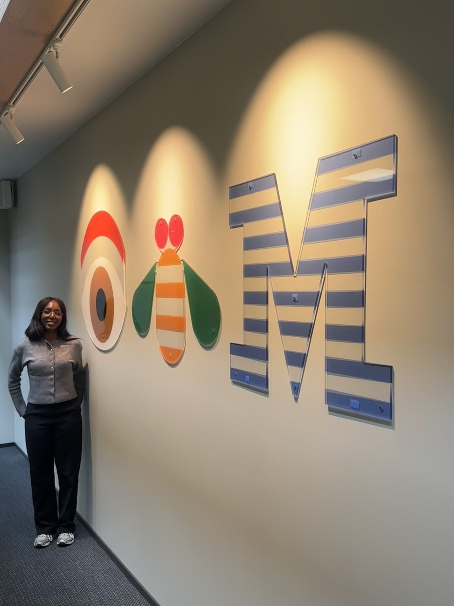

Videopresentasjon
Her legges videopresentasjonen til obligatorisk samling 2 den 22. oktober 2026. Videoen oppsummerer hva jeg har jobbet med, hvilke utfordringer jeg har møtt, og hva jeg ønsker å diskutere videre.
Erstatt denne boksen med en videolenke eller innebygd video når den er klar.
Hvor står prosjektet nå?
Praksisprosjektet handler om å utforske hvordan en moderne dataplattform kan bygges opp fra datakilde til behandling, lagring og videre bruk. Målet er å lage en demonstrator som viser hvordan data kan hentes inn, prosesseres, sikres og gjøres tilgjengelige for analyse eller visualisering.
I starten av praksisperioden brukte jeg tid på å forstå teknologiene, avklare prosjektets omfang og få tilgang til plattformen. De siste ukene har jeg kunnet arbeide mer praktisk, og det første konkrete fokuset har vært å hente inn sanntidsdata om fly fra OpenSky og forberede disse for videre behandling.
Blå markering viser delene jeg har jobbet praktisk med. De øvrige er planlagte steg, ikke ferdig implementerte komponenter.
Fra OpenSky til StreamSets
Oppsett av datapipeline
Jeg har satt opp en pipeline i StreamSets som henter flydata fra OpenSky sitt åpne API. Dataene kommer inn som en struktur med informasjon om flere fly samlet, og må derfor behandles før de kan sendes videre til andre tjenester.
I pipelinen bruker jeg HTTP Client til å hente inn data i streaming-modus. Deretter bruker jeg Field Pivoter til å dele opp states-arrayet, slik at hvert fly blir en egen record. Til slutt bruker jeg Field Remover for å rydde bort interne felt som ikke skal være med videre. Foreløpig brukes en midlertidig Trash-destinasjon mens koblingen til Kafka forberedes.
Det har vært nyttig å se hvordan data som i utgangspunktet kommer som ett større API-svar, kan omformes til mindre og mer håndterbare dataposter. Jeg har også måttet sette meg inn i strukturen på OpenSky-dataene for å forstå hvilke felt som skal beholdes og hvordan de skal behandles.
Ikke alt fungerte på første forsøk
Tekniske utfordringer i testmiljøet
Underveis har jeg støtt på flere problemer som ikke skyldtes selve logikken i pipelinen. Blant annet så det ut som HTTP-komponentene var installert, men de var likevel ikke tilgjengelige på enginen. Dette viste seg å skyldes en feil i programvaren, som ble løst med hjelp fra teamet.
Vi opplevde også at enginene brukte svært mye minne når flere kjørte preview samtidig. Det førte til at forhåndsvisninger krasjet og at økter ble avbrutt. Problemet ble løst ved å rydde opp i overbelastede engine-poder i OpenShift, noe som krevde administratorrettigheter.
For å redusere belastningen i testmiljøet har jeg brukt et geografisk avgrenset område rundt Oslo når flydata hentes fra OpenSky, i stedet for å hente data for hele verden. Dette har gjort det lettere å teste pipelinen uten unødvendig store datamengder.
Hva jeg har lært
En viktig erfaring er at arbeid med dataplattformer ikke bare handler om å koble sammen riktige komponenter. Det handler også om å forstå infrastrukturen rundt, hvilke begrensninger miljøet har, og hvordan man systematisk finner årsaken når noe ikke fungerer.
Jeg har lært mye av å samarbeide med de ansatte i teamet, stille spørsmål og undersøke eksisterende oppsett. Særlig nyttig har det vært å kombinere dokumentasjon med å prøve ting i praksis. Det som virker komplisert på papiret, blir ofte lettere å forstå når jeg ser hvordan tjenestene faktisk er koblet sammen.
Videre arbeid med Confluent Kafka
På kontoret i uke 41
I uke 41 var jeg fysisk på IBM-kontoret. Det var verdifullt å kunne jobbe tett på teamet, stille spørsmål underveis og få hjelp til å løse problemer i testmiljøet. Jeg fikk også et bedre innblikk i hvordan de ansatte samarbeider om tekniske utfordringer og deler kunnskap.
Det har gjort det lettere å komme videre med den praktiske delen av prosjektet og få en tydeligere forståelse av hvordan de ulike tjenestene inngår i en større plattform.

Kafka og Confluent i uke 42
I uke 42 har jeg fortsatt med å utforske hvordan StreamSets skal kobles til Confluent Kafka. Kafka brukes til å håndtere datastrømmer mellom ulike systemer. I dette prosjektet er tanken at flydataene skal sendes fra StreamSets til en Kafka-topic, slik at andre komponenter kan lese og behandle dem videre.
Jeg har fått forklart hvordan Kafka er bygget opp rundt brokers, som tar imot og videreformidler data, og hvordan tjenester kommuniserer via interne endepunkter i OpenShift. Vi bruker en programvareinstallasjon av Confluent som kjører i miljøet vårt, fremfor en ekstern SaaS-løsning.
Jeg har også sett nærmere på det eksisterende Confluent-oppsettet og hvordan det henger sammen med watsonx.data. Teamet har oppfordret meg til å utforske konfigurasjonen og prøve å sette opp tilsvarende selv. Dette er fortsatt arbeid underveis; jeg har ikke ferdigstilt integrasjonen mellom StreamSets og Kafka ennå.
Neste steg i prosjektet
Koble sammen tjenestene
Neste mål er å bytte ut den midlertidige Trash-destinasjonen i StreamSets med en Kafka Producer, slik at dataene kan sendes til en topic for rådata fra OpenSky. Før dette kan gjøres, må nødvendige tilganger og deler av konfigurasjonen avklares.
Jeg skal også lære mer om Confluent og Kafka, blant annet gjennom dokumentasjon og kurs, og få bedre forståelse av hvordan skjemaer og datatyper håndteres med Schema Registry.
Fra strømming til lagring og analyse
Når Kafka-delen er på plass, er planen å undersøke hvordan dataene kan lagres videre ved hjelp av Tableflow, Apache Iceberg og watsonx.data. Dette vil gjøre det mulig å bevare historiske flydata og bruke dem til spørringer og analyse.
På lengre sikt skal jeg også se på Apache Flink for behandling og beriking av datastrømmer, og hvordan plattformen kan støtte sporing av dataflyt, tilgangsstyring og en enkel visualisering. Disse delene ligger foreløpig lenger frem i prosjektet.
Digitale møter og kontorarbeid
I uke 40 hadde jeg digitale møter med teamet, mens jeg i uke 41 fikk jobbe fysisk på IBM-kontoret.

Et lite innblikk fra IBM
Ved siden av det tekniske arbeidet har det vært spennende å bli kjent med arbeidsmiljøet hos IBM. Her er noen bilder fra kontorbesøket i uke 41.


Hva tar jeg med meg så langt?
Jeg opplever at jeg har kommet et godt stykke videre siden den første statusrapporten. Da handlet mye om å finne retning, forstå teknologiene og få tilgang til systemene. Nå har jeg fått jobbe mer konkret med dataflyten og erfart hvordan en løsning utvikles steg for steg.
Det mest lærerike har kanskje vært at utfordringene underveis har tvunget meg til å forstå mer enn bare den enkelte oppgaven. Jeg har fått se hvor viktig samarbeid, feilsøking og kunnskapsdeling er når man jobber med teknologi som består av mange forskjellige komponenter.
Jeg gleder meg til å fortsette arbeidet og se hvordan datapipelinen kan bygges videre til en mer komplett demonstrator.